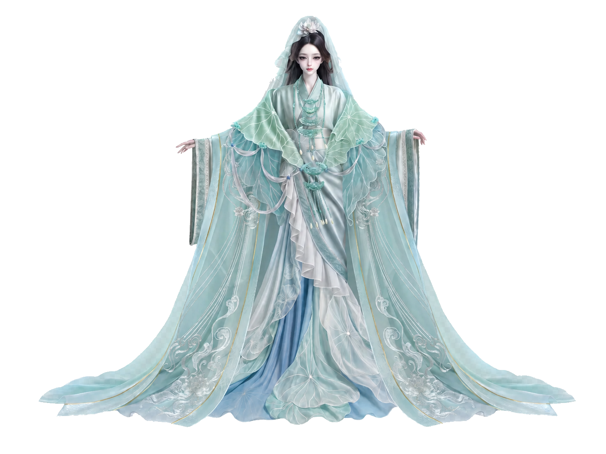

一、水泽初逢
镜昕初临人间时，正值盛夏。

镜昕初临人间时，正值盛夏。
水泽间浮动着黏腻的雾气，百花之主将她点化于此，交予她一池荷花的盛衰。
她偏爱水面以上的世界，风穿过莲叶，月光碎在轻薄的衣袂间，连倒影都显得清透无瑕。世人在岸边燃香，赞颂她不染尘埃的高洁。听得久了，她也深信自己理应如此——神明本该悬于浊世之外。
然而，每当垂下眼眸，她总会猝不及防地瞥见自己的根系。
它们刺透清波，深深扎入腥热、幽暗的淤泥里。那里蛰伏着腐叶与百年沉积的泥垢。她本能地感到厌恶与恐惧，生怕那股浑浊的腥气终有一日会顺着水流攀上花瓣。
于是，她执拗地仰起头，只看着水面的月亮，自欺欺人地假装那片幽暗的来处并不存在。
变故发生在静水深流处。她开始听见水底的呜咽。
起初只是极轻的呢喃，后来渐渐汹涌，汇聚成无数凡人的悲欢。有人在岸边叩首泣血送别挚爱，有人在绝境中哀求哪怕一丝生机，也有人放下一盏孤灯，只为自己半生做过的错事求一个虚无的宽恕。
灯火随波远去，那些求不得、怨憎会、爱别离的执念却重重沉入水底，一层层覆在她脚下的淤泥上。
镜昕终于避无可避地低下了头。
她凝视着那片曾令她作呕的深渊，却赫然发现，淤泥中包裹着的，全是世人滚烫的眼泪与无望的悔意。有人满身罪孽仍妄图赎罪，有人受尽凌迟却死守着心底最后一点微茫的善。她一直试图割裂的，正是凡人鲜血淋漓却拼命活过的痕迹。
而她的根须，正贪婪地汲取着这些痛楚，开出极艳的花。
后来，当有人再来到荷塘倾吐心音时，风会奇异地静止。莲叶低垂，平滑的水面宛如一面窥心的明镜。
探身望向水中的凡人，会在涟漪中骤然直面自己最不愿触碰的旧梦：一句伤人至深且无法收回的恶言，一张此生无缘再见的容颜，或是某个岔路口懦弱逃避的抉择。
世人惊畏，将其奉为“镜花水月”的神迹。
镜昕只是静静伫立在水畔，冷眼又慈悲地陪他们重新经历一次撕裂。她不降下神谕改写因果，也不轻许虚伪的原谅。有些溃烂必须亲手剖开，有些业债注定要用余生偿还。水镜只能映照出被怯懦掩埋的真相，无法替任何人跋涉泥泞。
但若那人在镜前恸哭后，终于颤抖着接纳了自己残破的过往，幽暗的水底便会悄然绽开一朵新莲。
岁岁逢夏，水泽的莲花枯了又荣。岸边的红尘客如蜉蝣般更迭，水底的悲欢依旧层出不穷。
她目睹过在水镜前执迷不悟最终沉沦的疯子，也垂怜过那些凝视深渊后终于肯与自己和解的灵魂。她渐渐明白，真正的慈悲从不避讳肮脏。
如今，人们依旧在岸边叩拜这位至洁的花神。但她早已不再小心翼翼地维持那副悬浮的神明躯壳。她知晓花瓣为何能白得耀眼，更坦然接纳了根系扎根于何等浓稠的苦难。当她再次俯身触碰浑水时，衣袖沾染泥浆，眼中却有了真正的悲悯。
夜色四合，水面漂浮的祈愿灯一盏盏黯淡。镜昕赤足立于泥沼之上，清风自岸边拂过她的游丝与衣袂。
脚下是深沉的欲念与苦难，而眼前的荷花，正要迎着月光盛开。